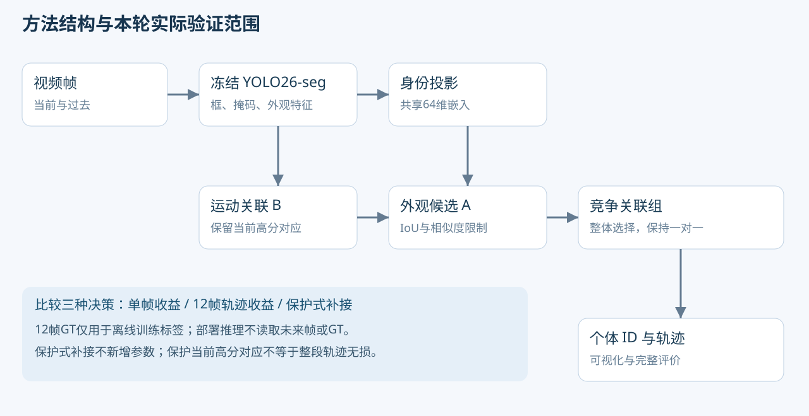

同一检测、同一身份特征，比较关联策略怎样影响后续轨迹。猪、马和斑马作为应用与验证案例，保留改善，也保留错接与退化。
切换数据范围，同时查看基线、同容量对照和候选。
左侧 ByteTrack，右侧候选。使用原始预测 ID 和掩码，未人工修正轨迹；视频以15fps呈现，指标来自全部原始帧。
在笔记本上运行冻结模型，并与 ByteTrack 生成并排视频。上限200MB，最多分析前30秒；无真实ID标签时不报告准确率。
等待选择视频。

595组训练干预中，74组的后续12帧收益方向与单帧不同。补接和改写的风险也明显不同，因此有必要区分。
训练中的规律没有稳定迁移。PEA在斑马3/4仍低于基线，CGS-T也没有超过同容量正确性对照。学习门控的收益不能当作已成立的创新贡献。
144条记录：143条可用，1条未知。ByteTrack与主要候选在125个可评配对上均保持原ID，这些片段没有证明方法额外改善。
按固定顺序核对8个公开间断事件，4个事件中目标仍可见，其余无法确认完全消失。本轮没有已确认的完整遮挡恢复事件。
标签为一次AI视觉复核，未借用跟踪器ID；可查看原图和JSON继续复核，不能当作密集人工金标准。
保留可复核的局部改善，关闭当前配置的追加拟合。下一重点是错误补接的时序验证与回退：先固定运动轨迹，再检验身份恢复能否减少错接而不污染运动状态。该后继实验尚未启动。
全部模型推理、拟合、评价和配对视频渲染在离线笔记本28358lan执行。公共目录中转，工作区为 D:\thesis-video-v2-20261018。图表在台式机按真实JSON绘制后同步回笔记本。
D:\thesis-video-v2-20261018
IDF1/HOTA由固定TrackEval计算。已有方法采用Ultralytics 8.4.100、共同检测/身份特征、无GMC配置，并非各论文榜单配置。CGS-T的斑马1/2是其独立确认；后来PEA复用时只算已见复核。斑马3/4是PEA的独立确认，没有用来改阈值。